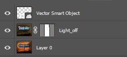
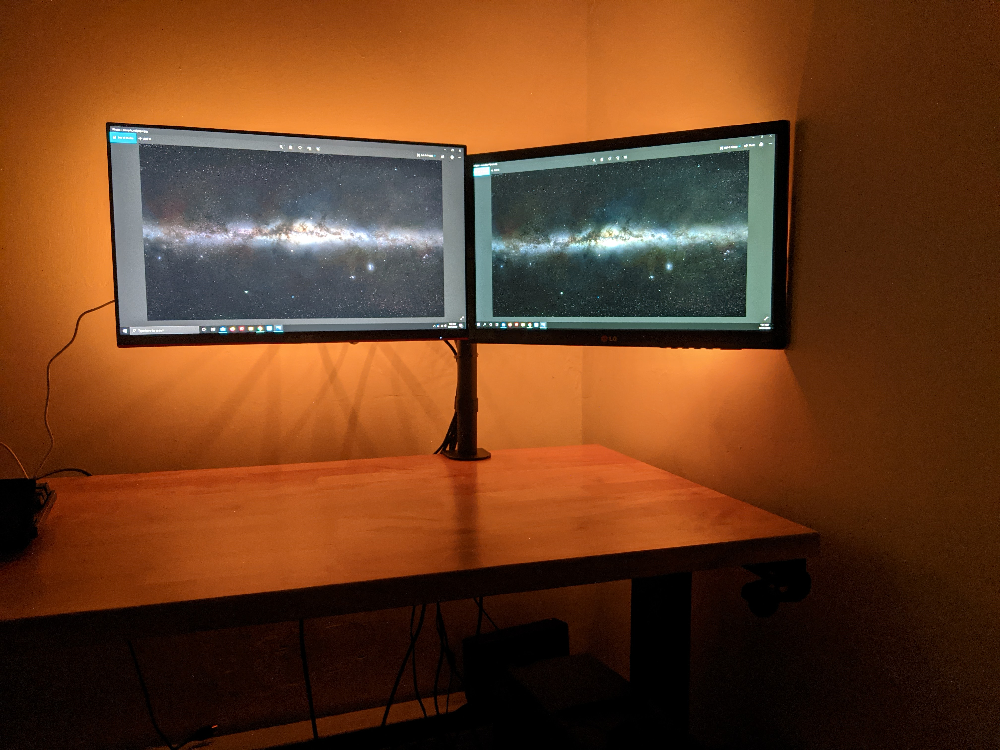
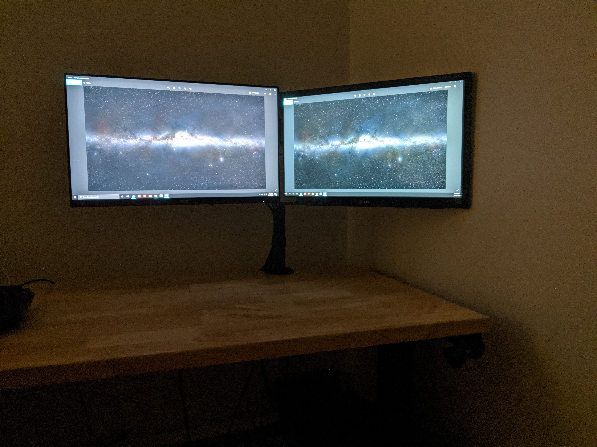

Introduction and Learning Objective
From this image, viewers should be able to glean the difference one can find between a monitor with bias lighting and one without. Objective: Get others to consider adding bias lighting to their computer setup to improve eye health.
Original File Links and Licensing
My Photoshop doucument was too large to upload.



Techniques
Basic Raster Techniques
- Change Image Size
- Adjusted Brightness
- Applied a noise reduction filter
- Adjust Color Vibrancy
Advanced Raster Techniques
- Replace background with image mask
- Remove small objects
- Fine-tuned with a brush
- Use Brushes with color and shape
Basic Vector Techniques
- Draw simple shapes
- Place text on shape
- Format Text
Advanced Vector Techniques
- Create color gradients
- Edit paths and shapes
- Use Brushes with color and shape
Design Elements
- Contrast
- Contrast is the main point of using bias lighting, so I think I did a good job of engaging it by showing the contrast on the pictures themselves, as well as the contrast seen by comparing the two pictures.
- Repitition
- I think that repitition makes the image appealing to look at because of the alternating colors of the 2 images. I also tried to carry the effect of gradient light throughout the image.
- Alignment
- The perfect alignement of the 2 photos was difficult to get right, but I think it adds a surreal element to the picture that adds to the feeling of improvement bias lighting brings.
- Proximity
- The monitors are grouped on top of each other, while the vector graphic is offset. All elements are also largely isolated to draw focus to them.